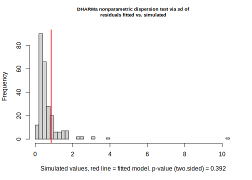
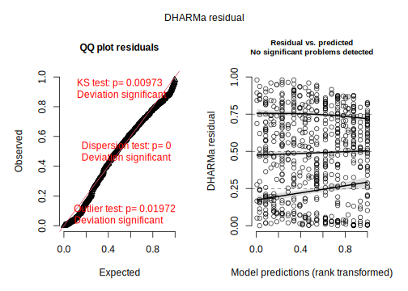
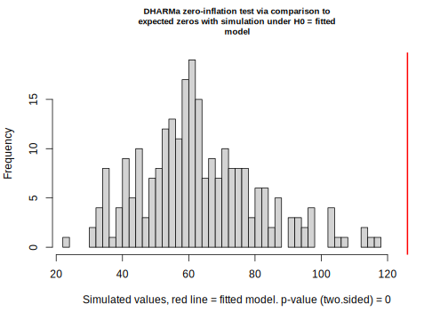
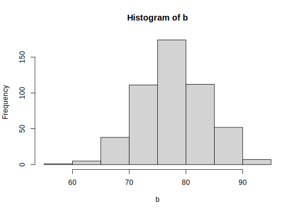
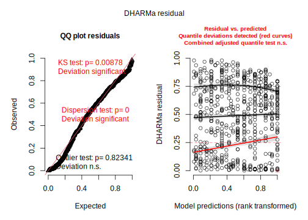
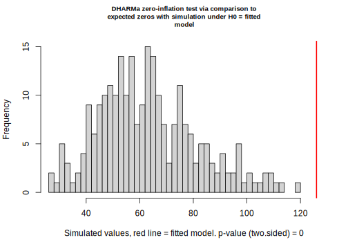

6.2 Practical
This is an adapted version largely inspired by the tutorial in (Bolker et al. 2009). Spatial variation in nutrient availability and herbivory is likely to cause population differentiation and maintain genetic diversity in plant populations.Here we measure the extent to which mouse-ear cress (Arabidopsis thaliana)exhibits population and genotypic variation in their responses to these im-portant environmental factors. We are particularly interested in whether these populations exhibit nutrient mediated compensation, where higher nutrient levels allow genotypes to better tolerate herbivory (Banta et al. 2010). We use GLMMs to estimate the effect of nutrient levels, simulated herbivory, and their interaction on fruit production in Arabidopsis thaliana(fixed effects), and the extent to which populations vary in their responses(random effects, or variance components)
6.2.1 Packages and functions
You need to download the “extra_funs.R” script for some functions used in the Practical
library(lme4)
library(tidyverse)
library(patchwork)
library(lattice)
library(DHARMa)
source("data/extra_funs.R")6.2.2 The data set
In this data set, the response variable is the number of fruits (i.e. seed capsules) per plant. The number of fruits produced by an individual plant(the experimental unit) was hypothesized to be a function of fixed effects,including nutrient levels (low vs. high), simulated herbivory (none vs. apical meristem damage), region (Sweden, Netherlands, Spain), and interactions among these. Fruit number was also a function of random effects including both the population and individual genotype. Because Arabidopsis is highly selfing, seeds of a single individual served as replicates of that individual.There were also nuisance variables, including the placement of the plant in the greenhouse, and the method used to germinate seeds. These were estimated as fixed effects but interactions were excluded.
Xobservation number (we will use this observation number later, when we are accounting for overdispersion)rega factor for region (Netherlands, Spain, Sweden).popua factor with a level for each population.gena factor with a level for each genotype.racka nuisance factor for one of two greenhouse racks.nutrienta factor with levels for minimal or additional nutrients.amda factor with levels for no damage or simulated herbivory (apical meristem damage; we will sometimes refer to this as “clipping”)statusa nuisance factor for germination method.total.fruitsthe response; an integer count of the number of fruits per plant.
6.2.3 Specifying fixed and random Effects
Here we need to select a realistic full model, based on the scientific questions and the data actually at hand. We first load the data set and make sure that each variable is appropriately designated as numeric or factor (i.e.categorical variable).
dat_tf <- read.csv("data/Banta_TotalFruits.csv")
str(dat_tf)## 'data.frame': 625 obs. of 9 variables:
## $ X : int 1 2 3 4 5 6 7 8 9 10 ...
## $ reg : chr "NL" "NL" "NL" "NL" ...
## $ popu : chr "3.NL" "3.NL" "3.NL" "3.NL" ...
## $ gen : int 4 4 4 4 4 4 4 4 4 5 ...
## $ rack : int 2 1 1 2 2 2 2 1 2 1 ...
## $ nutrient : int 1 1 1 1 8 1 1 1 8 1 ...
## $ amd : chr "clipped" "clipped" "clipped" "clipped" ...
## $ status : chr "Transplant" "Petri.Plate" "Normal" "Normal" ...
## $ total.fruits: int 0 0 0 0 0 0 0 3 2 0 ...The X, gen, rack and nutrient variables are coded as integers, but we want them to be factors.
We use mutate() dplyr 📦, which operates within the data set, to avoid typing lots of commands like dat_tf$rack <- factor(dat_tf$rack)
At the same time, we reorder the clipping variable so that "unclipped" is the reference level (we could also have used relevel(amd,"unclipped")).
dat_tf <- mutate(
dat_tf,
X = factor(X),
gen = factor(gen),
rack = factor(rack),
amd = factor(amd, levels = c("unclipped", "clipped")),
nutrient = factor(nutrient, label = c("Low", "High"))
)Now we check replication for each genotype (columns) within each population (rows).
(reptab <- with(dat_tf, table(popu, gen)))## gen
## popu 4 5 6 11 12 13 14 15 16 17 18 19 20 21 22 23 24 25 27 28 30 34 35
## 1.SP 0 0 0 0 0 39 26 35 0 0 0 0 0 0 0 0 0 0 0 0 0 0 0
## 1.SW 0 0 0 0 0 0 0 0 0 0 0 0 0 0 0 0 0 28 20 0 0 0 0
## 2.SW 0 0 0 0 0 0 0 0 0 0 0 0 0 0 0 0 0 0 0 18 14 0 0
## 3.NL 31 11 13 0 0 0 0 0 0 0 0 0 0 0 0 0 0 0 0 0 0 0 0
## 5.NL 0 0 0 35 26 0 0 0 0 0 0 0 0 0 0 0 0 0 0 0 0 0 0
## 5.SP 0 0 0 0 0 0 0 0 43 22 12 0 0 0 0 0 0 0 0 0 0 0 0
## 6.SP 0 0 0 0 0 0 0 0 0 0 0 13 24 14 0 0 0 0 0 0 0 0 0
## 7.SW 0 0 0 0 0 0 0 0 0 0 0 0 0 0 0 0 0 0 0 0 0 45 47
## 8.SP 0 0 0 0 0 0 0 0 0 0 0 0 0 0 13 16 35 0 0 0 0 0 0
## gen
## popu 36
## 1.SP 0
## 1.SW 0
## 2.SW 0
## 3.NL 0
## 5.NL 0
## 5.SP 0
## 6.SP 0
## 7.SW 45
## 8.SP 0Exercise: this mode of inspection is OK for this data set but might fail for much larger data sets or for more levels of nesting. See if you can think of some other numerical or graphical methods for inspecting the structure of data sets.
- plot(reptab) gives a mosaic plot of the two-way table; examine this, see if you can figure out how to interpret it, and decide whether you think it might be useful
- try the commands colSums(reptab>0) (and the equivalent for rowSums) and figure out what they are telling you.
- Using this recipe, how would you compute the range of number of genotypes per treatment combination?
- Do you find the mosaic plot you obtained ugly and super hard to read? Me too 🤣
plot(reptab)Figure 6.2: A truly useless plot no one can understand
colSums()do the sum of all the rows for each columns of a table. SocolSums(reptab>0)gives you for each genotype the number of populations (lines) where you have at least 1 observations.
colSums(reptab > 0)## 4 5 6 11 12 13 14 15 16 17 18 19 20 21 22 23 24 25 27 28 30 34 35 36
## 1 1 1 1 1 1 1 1 1 1 1 1 1 1 1 1 1 1 1 1 1 1 1 1rowSums(reptab > 0)## 1.SP 1.SW 2.SW 3.NL 5.NL 5.SP 6.SP 7.SW 8.SP
## 3 2 2 3 2 3 3 3 3- You firts need to create a new table of number of observations per treatment and genotypes
reptab2 <- with(dat_tf, table(paste(amd, nutrient, sep = "_"), gen))
range(reptab2)## [1] 2 13This reveals that we have only 2–4 populations per region and 2–3 genotypes per population. However, we also have 2–13 replicates per genotype for each treatment combination (four unique treatment combinations: 2 levels of nutrients by 2 levels of simulated herbivory). Thus, even though this was a reasonably large experiment (625 plants), there were a very small number of replicates with which to estimate variance components, and many more potential interactions than our data can support. Therefore, judicious selection of model terms, based on both biology and the data, is warranted. We note that we don’t really have enough levels per random effect, nor enough replication per unique treatment combination. Therefore, we decide to omit the fixed effect of “region”, although we recognize that populations in different regions are widely geographically separated.
However, as in all GLMMs where the scale parameter is treated as fixed and deviations from the fixed scale parameter would be identifiable (i.e. Poisson and binomial (N > 1), but not binary, models) we may have to deal with overdispersion.
6.2.4 Look at overall patterns in data
I usually like to start with a relatively simple overall plot of the data, disregarding the random factors, just to see what’s going on. For reasons to be discussed below, we choose to look at the data on the log (or log(1 + x) scale. Let’s plot either box-and-whisker plots (useful summaries) or dot plots (more detailed, good for seeing if we missed anything).
Figure 6.3: Number of fruits (log + 1) as a function of treatments
p1 <- qplot(
interaction(nutrient, amd),
log(1 + total.fruits),
data = dat_tf, geom = "boxplot") +
facet_wrap(~reg, nrow = 1) +
theme(axis.text.x = element_text(angle = 45)) +
ggtitle("Boxplot")
p2 <- qplot(
interaction(nutrient, amd),
log(1 + total.fruits),
data = dat_tf) +
facet_wrap(~reg, nrow = 1) +
stat_sum() +
theme(axis.text.x = element_text(angle = 45)) +
ggtitle("Dot plot")
p1 + p26.2.5 Choose an error distribution
The data are non-normal in principle (i.e., count data, so our first guess would be a Poisson distribution). If we transform total fruits with the canonical link function (log), we hope to see relatively homogeneous variances across categories and groups.
First we define a new factor that represents every combination of genotype and treatment (nutrient × clipping) treatment, and sort it in order of increasing mean fruit set.
dat_tf <- dat_tf %>%
mutate(
gna = reorder(interaction(gen, nutrient, amd), total.fruits, mean)
)Now time to plot it
ggplot(dat_tf, aes(x = gna, y = log(1 + total.fruits))) +
geom_boxplot() +
theme_bw() +
theme(axis.text.x = element_text(angle = 90))Figure 6.4: Boxplot of total fruits (log + 1) per genotypes and treatments
We could also calculate the variance for each genotype × treatment combination and provide a statistical summary of these variances. This reveals substantial variation among the sample variances on the transformed data. In addition to heterogeneous variances across groups, Figure 1 reveals many zeroes in groups, and some groups with a mean and variance of zero, further suggesting we need a non-normal error distribution, and perhaps something other than a Poisson distribution.
We could calculate λ(mean) for each genotype × treatment combination and provide a statistical summary of each group’s λ.
grp_means <- with(dat_tf, tapply(total.fruits, list(gna), mean))
summary(grp_means)## Min. 1st Qu. Median Mean 3rd Qu. Max.
## 0.00 11.35 23.16 31.86 49.74 122.40A core property of the Poisson distribution is that the variance is equal to the mean. A simple diagnostic is a plot of the group variances against the group means:
- Poisson-distributed data will result in a linear pattern with slope = 1
- as long as the variance is generally greater than the mean, we call the data overdispersed. Overdispersion comes in various forms:
- a linear mean-variance relationship with Var = φµ (a line through the origin) with φ > 1 is called a quasi-Poisson pattern (this term describes the mean-variance relationship, not any particular proability distribution); we can implement it statistically via quasilikelihood (Venables and Ripley, 2002) or by using a particular parameterization of the negative binomial distribution (“NB1” inthe terminology of Hardin and Hilbe (2007))
- a semi-quadratic pattern, Var = µ(1 + αµ) or µ(1 + µ/k), is characteristic of overdispersed data that is driven by underlying heterogeneity among samples, either the negative binomial (gamma-Poisson) or the lognormal-Poisson (Elston et al. 2001)
We’ve already calculated the group (genotype × treatment) means, we calculate the variances in the same way.
grp_vars <- with(
dat_tf,
tapply(
total.fruits,
list(gna), var
)
)We can get approximate estimates of the quasi-Poisson (linear) and negative binomial (linear/quadratic) pattern using lm.
lm1 <- lm(grp_vars ~ grp_means - 1) ## `quasi-Poisson' fit
phi_fit <- coef(lm1)
lm2 <- lm((grp_vars - grp_means) ~ I(grp_means^2) - 1)
k_fit <- 1 / coef(lm2)Now we can plot them.
plot(grp_vars ~ grp_means, xlab = "group means", ylab = "group variances")
abline(c(0, 1), lty = 2)
text(105, 500, "Poisson")
curve(phi_fit * x, col = 2, add = TRUE)
## bquote() is used to substitute numeric values
## in equations with symbols
text(110, 3900,
bquote(paste("QP: ", sigma^2 == .(round(phi_fit, 1)) * mu)),
col = 2
)
curve(x * (1 + x / k_fit), col = 4, add = TRUE)
text(104, 7200, paste("NB: k=", round(k_fit, 1), sep = ""), col = 4)
l_fit <- loess(grp_vars ~ grp_means)
mvec <- 0:120
lines(mvec, predict(l_fit, mvec), col = 5)
text(100, 2500, "loess", col = 5)Figure 6.5: Graphical evaluation of distribution to use
Same with ggplot
ggplot(
data.frame(grp_means, grp_vars),
aes(x = grp_means, y = grp_vars)) +
geom_point() +
geom_smooth(
aes(colour = "Loess"), se = FALSE) +
geom_smooth(
method = "lm", formula = y ~ x - 1, se = FALSE,
aes(colour = "Q_Pois")) +
stat_function(
fun = function(x) x * (1 + x / k_fit),
aes(colour = "Neg_bin")
) +
geom_abline(
aes(intercept = 0, slope = 1, colour = "Poisson")) +
scale_colour_manual(
name = "legend",
values = c("blue", "purple", "black", "red")) +
scale_fill_manual(
name = "legend",
values = c("blue", "purple", "black", "red")) +
guides(fill = FALSE)## Warning: `guides(<scale> = FALSE)` is deprecated. Please use `guides(<scale>
## = "none")` instead.## `geom_smooth()` using method = 'loess' and formula 'y ~ x'Figure 6.6: Graphical evaluation of distribution to use with ggplot
These fits are not rigorous statistical tests — they violate a variety of assumptions of linear regression (e.g. constant variance, independence), but they are good enough to give us an initial guess about what distributions we should use.
Exercise
- compare a simple quadratic fit to the data (i.e., without the linear part) with the negative binomial and quasipoisson fits
lm3 <- lm(grp_vars ~ I(grp_means)^2 - 1) ## quadratic fit
quad_fit <- coef(lm3)
ggplot(
data.frame(grp_means, grp_vars),
aes(x = grp_means, y = grp_vars)) +
geom_point() +
geom_smooth(
method = "lm", formula = y ~ x - 1, se = FALSE,
aes(colour = "Q_Pois")) +
stat_function(
fun = function(x) x * (1 + x / k_fit),
aes(colour = "Neg_bin")
) +
geom_smooth(
method = "lm", formula = y ~ I(x^2) - 1, se = FALSE,
aes(colour = "Quad")) +
scale_colour_manual(
name = "legend",
values = c("blue", "purple", "black")) +
scale_fill_manual(
name = "legend",
values = c("blue", "purple", "black")) +
guides(fill = FALSE)## Warning: `guides(<scale> = FALSE)` is deprecated. Please use `guides(<scale>
## = "none")` instead.Figure 6.7: Graphical evaluation of distribution to use including quadratic effect
6.2.5.1 Plotting the response vs treatments
Just to avoid surprises
ggplot(dat_tf, aes(x = amd, y = log(total.fruits + 1), colour = nutrient)) +
geom_point() +
## need to use as.numeric(amd) to get lines
stat_summary(aes(x = as.numeric(amd)), fun = mean, geom = "line") +
theme_bw() +
theme(panel.spacing = unit(0, "lines")) +
facet_wrap(~popu)Figure 6.8: Fruit production by treatments by population
ggplot(dat_tf, aes(x = amd, y = log(total.fruits + 1), colour = gen)) +
geom_point() +
stat_summary(aes(x = as.numeric(amd)), fun = mean, geom = "line") +
theme_bw() +
## label_both adds variable name ('nutrient') to facet labels
facet_grid(. ~ nutrient, labeller = label_both)Figure 6.9: Fruit production by genotype by treatments
6.2.6 Fitting group-wise GLM
Another general starting approach is to fit GLMs to each group of data separately, equivalent to treating the grouping variables as fixed effects. This should result in reasonable variation among treatment effects. We first fit the models, and then examine the coefficients.
glm_lis <- lmList(
total.fruits ~ nutrient * amd | gen,
data = dat_tf,
family = "poisson")
plot.lmList(glm_lis)## Using grp as id variablesFigure 6.10: Model coefficients for GLM fits on each genotype
Three genotypes (5, 6, 34) have extreme coefficients (Fig. 5). A mixed model assumes that the underlying random effects are normally distributed, although we shouldn’t take these outliers too seriously at this point — we are not actually plotting the random effects, or even estimates of random effects (which are not themselves guaranteed to be normally distributed), but rather separate estimates for each group. Create a plotting function for Q-Q plots of these coefficients to visualize the departure from normality.
qqmath.lmList(glm_lis)## Using as id variablesFigure 6.11: Q-Q plots of model coefficients for GLM fits on each genotype
We see that these extreme coefficients fall far outside a normal error distribution. We shouldn’t take these outliers too seriously at this point — we are not actually plotting the random effects, or even estimates of random effects, but rather separate estimates for each group. Especially if these groups have relatively small sample sizes, the estimates may eventually be “shrunk” closer to the mean when we do the mixed model. We should nonetheless take care to see if the coefficients for these genotypes from the GLMM are still outliers, and take the same precautions as we usually do for outliers. For example, we can look back at the original data to see if there is something weird about the way those genotypes were collected, or try re-running the analysis without those genotypes to see if the results are robust.
6.2.7 Fitting and evaluating GLMMs
Now we (try to) build and fit a full model, using glmer in the emo::ji("pacakage") lme4. This model has random effects for all genotype and population × treatment random effects, and for the nuisance variables for the rack and germination method (status). (Given the mean-variance relationship we saw it’s pretty clear that we are going to have to proceed eventually to a model with overdispersion, but we fit the Poisson model first for illustration.)
mp1 <- glmer(total.fruits ~ nutrient * amd +
rack + status +
(amd * nutrient | popu) +
(amd * nutrient | gen),
data = dat_tf, family = "poisson"
)## Warning in checkConv(attr(opt, "derivs"), opt$par, ctrl =
## control$checkConv, : Model failed to converge with max|grad| = 0.00550538
## (tol = 0.002, component 1)overdisp_fun(mp1)## chisq ratio p
## 13909.46583 23.25998 0.00000The overdisp_fun() is described [here] https://bbolker.github.io/mixedmodels-misc/glmmFAQ.html#testing-for-overdispersioncomputing-overdispersion-factor) on the absolutely fantastic FAQ about GLMMs by Ben Bolker https://bbolker.github.io/mixedmodels-misc/glmmFAQ.html
We can ignore the model convergence for the moment. This shows that the data are (extremely) over-dispersed, given the model.
We can also use the excellent DHARMa 📦 (Hartig 2022) to evaluate fit of glm and glmm. So instead of using the function overdisp_fun(), we can simply use the function testDispersion().
testDispersion(mp1)
##
## DHARMa nonparametric dispersion test via sd of residuals fitted vs.
## simulated
##
## data: simulationOutput
## dispersion = 1.2906, p-value = 0.392
## alternative hypothesis: two.sidedAs you can see, DHARMa suggests that there is no overdispersion based on the distribution of residuals from simulated data. We are going to consider that we have overdispersion and adjust the model accordingly.
Now we add the observation-level random effect to the model to account for overdispersion (Elston et al. 2001).
mp2 <- update(mp1, . ~ . + (1 | X))## Warning in (function (fn, par, lower = rep.int(-Inf, n), upper =
## rep.int(Inf, : failure to converge in 10000 evaluations## Warning in optwrap(optimizer, devfun, start, rho$lower, control = control, :
## convergence code 4 from Nelder_Mead: failure to converge in 10000 evaluations## Warning in checkConv(attr(opt, "derivs"), opt$par, ctrl =
## control$checkConv, : Model failed to converge with max|grad| = 0.0864843 (tol
## = 0.002, component 1)The model takes much longer to fit (and gives warnings). We look just at the variance components. In particular, if we look at the correlation matrix among the genotype random effects, we see a perfect correlation.
attr(VarCorr(mp2)$gen, "correlation")## (Intercept) amdclipped nutrientHigh
## (Intercept) 1.0000000 -0.9938107 -0.9874693
## amdclipped -0.9938107 1.0000000 0.9848999
## nutrientHigh -0.9874693 0.9848999 1.0000000
## amdclipped:nutrientHigh 0.8295187 -0.8383845 -0.9072315
## amdclipped:nutrientHigh
## (Intercept) 0.8295187
## amdclipped -0.8383845
## nutrientHigh -0.9072315
## amdclipped:nutrientHigh 1.0000000We’ll try getting rid of the correlations between clipping (amd) and nutrients, using amd+nutrient instead of amd*nutrient in the random effects specification (here it seems easier to re-do the model rather than using update to add and subtract terms).
mp3 <- glmer(total.fruits ~ nutrient * amd +
rack + status +
(amd + nutrient | popu) +
(amd + nutrient | gen) + (1 | X),
data = dat_tf, family = "poisson"
)## boundary (singular) fit: see ?isSingularattr(VarCorr(mp3)$gen, "correlation")## (Intercept) amdclipped nutrientHigh
## (Intercept) 1.0000000 -0.9999990 -0.9974329
## amdclipped -0.9999990 1.0000000 0.9974626
## nutrientHigh -0.9974329 0.9974626 1.0000000attr(VarCorr(mp3)$popu, "correlation")## (Intercept) amdclipped nutrientHigh
## (Intercept) 1.0000000 0.9938305 0.9985769
## amdclipped 0.9938305 1.0000000 0.9884101
## nutrientHigh 0.9985769 0.9884101 1.0000000Unfortunately, we still have perfect correlations among the random effects terms. For some models (e.g. random-slope models), it is possible to fit random effects models in such a way that the correlation between the different parameters (intercept and slope in the case of random-slope models) is constrained to be zero, by fitting a model like (1|f)+(0+x|f); unfortunately, because of the way lme4 is set up, this is considerably more difficult with categorical predictors (factors).
We have to reduce the model further in some way in order not to overfit (i.e., in order to not have perfect ±1 correlations among random effects). It looks like we can’t allow both nutrients and clipping in the random effect model at either the population or the genotype level. However, it’s hard to know whether we should proceed with amd or nutrient, both, or neither in the model.
A convenient way to proceed if we are going to try fitting several different combinations of random effects is to fit the model with all the fixed effects but only observation-level random effects, and then to use update to add various components to it.
mp_obs <- glmer(total.fruits ~ nutrient * amd +
rack + status +
(1 | X),
data = dat_tf, family = "poisson"
)Now, for example, update(mp_obs,.~.+(1|gen)+(amd|popu)) fits the model with intercept random effects at the genotype level and variation in clipping effects across populations.
Exercise using update, fit the models with
- clipping variation at both genotype and population levels;
- nutrient variation at both genotype and populations; convince yourself that trying to fit variation in either clipping or nutrients leads to overfitting (perfect correlations).
- Fit the model with only intercept variation at the population and genotype levels, saving it as mp4; show that there is non-zero variance estimated
mpcli <- update(mp_obs, . ~ . + (amd | gen) + (amd | popu))## Warning in checkConv(attr(opt, "derivs"), opt$par, ctrl =
## control$checkConv, : Model failed to converge with max|grad| = 0.0971186 (tol
## = 0.002, component 1)VarCorr(mpcli)## Groups Name Std.Dev. Corr
## X (Intercept) 1.431030
## gen (Intercept) 0.296668
## amdclipped 0.040105 -0.855
## popu (Intercept) 0.751957
## amdclipped 0.129003 0.996mpnut <- update(mp_obs, . ~ . + (nutrient | gen) + (nutrient | popu))## Warning in checkConv(attr(opt, "derivs"), opt$par, ctrl =
## control$checkConv, : Model failed to converge with max|grad| = 0.0229913 (tol
## = 0.002, component 1)VarCorr(mpnut)## Groups Name Std.Dev. Corr
## X (Intercept) 1.41950
## gen (Intercept) 0.47815
## nutrientHigh 0.32489 -1.000
## popu (Intercept) 0.74336
## nutrientHigh 0.11974 1.000mp4 <- update(mp_obs, . ~ . + (1 | gen) + (1 | popu))## Warning in checkConv(attr(opt, "derivs"), opt$par, ctrl =
## control$checkConv, : Model failed to converge with max|grad| = 0.00335685
## (tol = 0.002, component 1)VarCorr(mp4)## Groups Name Std.Dev.
## X (Intercept) 1.43133
## gen (Intercept) 0.28586
## popu (Intercept) 0.80553In other words, while it’s biologically plausible that there is some variation in the nutrient or clipping effect at the genotype or population levels, with this modeling approach we really don’t have enough data to speak confidently about these effects. Let’s check that mp4 no longer incorporates overdispersion (the observationlevel random effect should have taken care of it):
overdisp_fun(mp4)## chisq ratio p
## 177.5133664 0.2886396 1.0000000Using the DHARMa 📦, we will also check the model. To do so we first need to simulate some data and get the scaled residuals following the DHARMa notation.
Then we can check the distributional properties of the scaled residuals and see if they follow the classic assumption using the different functions provided.
scaled_res <- simulateResiduals(mp4)
plot(scaled_res)## DHARMa:testOutliers with type = binomial may have inflated Type I error rates for integer-valued distributions. To get a more exact result, it is recommended to re-run testOutliers with type = 'bootstrap'. See ?testOutliers for details
testZeroInflation(mp4, plot = TRUE)
##
## DHARMa zero-inflation test via comparison to expected zeros with
## simulation under H0 = fitted model
##
## data: simulationOutput
## ratioObsSim = 1.9799, p-value < 2.2e-16
## alternative hypothesis: two.sided# note about overdispersion
sum(dat_tf$total.fruits == 0)## [1] 126a <- predict(mp4, type = "response")
b <- rep(0, 500)
for (j in 1:500) {
b[j] <- sum(sapply(seq(nrow(dat_tf)), function(i) rpois(1, a[i])) == 0)
}
hist(b)
6.2.8 Inference
6.2.8.1 Random effects
glmer (lmer) does not return information about the standard errors or confidence intervals of the variance components.
VarCorr(mp4)## Groups Name Std.Dev.
## X (Intercept) 1.43133
## gen (Intercept) 0.28586
## popu (Intercept) 0.805536.2.8.1.1 Testing for random Effects
If we want to test the significance of the random effects we can fit reduced models and run likelihood ratio tests via anova, keeping in mind that in this case (testing a null hypothesis of zero variance, where the parameter is on the boundary of its feasible region) the reported p value is approximately twice what it should be.
mp4v1 <- update(mp_obs, . ~ . + (1 | popu)) ## popu only (drop gen)
mp4v2 <- update(mp_obs, . ~ . + (1 | gen)) ## gen only (drop popu)## Warning in checkConv(attr(opt, "derivs"), opt$par, ctrl =
## control$checkConv, : Model failed to converge with max|grad| = 0.105093 (tol
## = 0.002, component 1)## Warning in checkConv(attr(opt, "derivs"), opt$par, ctrl = control$checkConv, : Model is nearly unidentifiable: very large eigenvalue
## - Rescale variables?anova(mp4, mp4v1)## Data: dat_tf
## Models:
## mp4v1: total.fruits ~ nutrient + amd + rack + status + (1 | X) + (1 | popu) + nutrient:amd
## mp4: total.fruits ~ nutrient + amd + rack + status + (1 | X) + (1 | gen) + (1 | popu) + nutrient:amd
## npar AIC BIC logLik deviance Chisq Df Pr(>Chisq)
## mp4v1 9 5017.4 5057.4 -2499.7 4999.4
## mp4 10 5015.4 5059.8 -2497.7 4995.4 4.0638 1 0.04381 *
## ---
## Signif. codes: 0 '***' 0.001 '**' 0.01 '*' 0.05 '.' 0.1 ' ' 1anova(mp4, mp4v2)## Data: dat_tf
## Models:
## mp4v2: total.fruits ~ nutrient + amd + rack + status + (1 | X) + (1 | gen) + nutrient:amd
## mp4: total.fruits ~ nutrient + amd + rack + status + (1 | X) + (1 | gen) + (1 | popu) + nutrient:amd
## npar AIC BIC logLik deviance Chisq Df Pr(>Chisq)
## mp4v2 9 5031.6 5071.5 -2506.8 5013.6
## mp4 10 5015.4 5059.8 -2497.7 4995.4 18.212 1 1.976e-05 ***
## ---
## Signif. codes: 0 '***' 0.001 '**' 0.01 '*' 0.05 '.' 0.1 ' ' 1For various forms of linear mixed models, the RLRsim package can do efficient simulation-based hypothesis testing of variance components — un- fortunately, that doesn’t include GLMMs. If we are sufficiently patient we can do hypothesis testing via brute-force parametric bootstrapping where we repeatedly simulate data from the reduced (null) model, fit both the re- duced and full models to the simulated data, and compute the distribution of the deviance (change in -2 log likelihood). The code below took about half an hour on a reasonably modern desktop computer.
simdev <- function() {
newdat <- simulate(mp4v1)
reduced <- lme4::refit(mp4v1, newdat)
full <- lme4::refit(mp4, newdat)
2 * (c(logLik(full) - logLik(reduced)))
}
set.seed(101)
nulldist0 <- replicate(2, simdev())
## zero spurious (small) negative values
nulldist[nulldist < 0 & abs(nulldist) < 1e-5] <- 0
obsdev <- 2 * c(logLik(mp4) - logLik(mp4v1))mean(c(nulldist, obsdev) >= obsdev)## [1] 0.01492537The true p-value is actually closer to 0.05 than 0.02. In other words, here the deviations from the original statistical model from that for which the original “p value is inflated by 2” rule of thumb was derived — fitting a GLMM instead of a LMM, and using a moderate-sized rather than an arbitrarily large (asymptotic) data set — have made the likelihood ratio test liberal (increased type I error) rather than conservative (decreased type I error).
We can also inspect the random effects estimates themselves (in proper statistical jargon, these might be considered “predictions” rather than “estimates” (Robinson, 1991)). We use the built-in dotplot method for the random effects extracted from glmer fits (i.e. ranef(model,condVar=TRUE)), which returns a list of plots, one for each random effect level in the model.
r1 <- as.data.frame(ranef(mp4, condVar = TRUE, whichel = c("gen", "popu")))
p1 <- ggplot(subset(r1, grpvar == "gen"), aes(y = grp, x = condval)) +
geom_point() +
geom_pointrange(
aes(xmin = condval - condsd * 1.96, xmax = condval + condsd * 1.96)
) +
geom_vline(aes(xintercept = 0, color = "red")) +
theme_classic() +
theme(legend.position = "none")
p2 <- ggplot(subset(r1, grpvar == "popu"), aes(y = grp, x = condval)) +
geom_point() +
geom_pointrange(
aes(xmin = condval - condsd * 1.96, xmax = condval + condsd * 1.96)
) +
geom_vline(aes(xintercept = 0, color = "red")) +
theme_classic() +
theme(legend.position = "none")
p1 + p2Figure 6.12: Distribution of BLUPs for genotypes and populations
As expected from the similarity of the variance estimates, the population-level estimates (the only shared component) do not differ much between the two models. There is a hint of regional differentiation — the Spanish populations have higher fruit sets than the Swedish and Dutch populations. Genotype 34 again looks a little bit unusual.
6.2.8.2 Fixed effects
Now we want to do inference on the fixed effects. We use the drop1 func- tion to assess both the AIC difference and the likelihood ratio test between models. (In glmm_funs.R we define a convenience function dfun to convert the AIC tables returned by drop1 (which we will create momentarily) into ∆AIC tables.) Although the likelihood ratio test (and the AIC) are asymptotic tests, comparing fits between full and reduced models is still more accurate than the Wald (curvature-based) tests shown in the summary tables for glmer fits.
(dd_aic <- dfun(drop1(mp4)))## Single term deletions
##
## Model:
## total.fruits ~ nutrient + amd + rack + status + (1 | X) + (1 |
## gen) + (1 | popu) + nutrient:amd
## npar dAIC
## <none> 0.000
## rack 1 55.083
## status 2 1.612
## nutrient:amd 1 1.444(dd_lrt <- drop1(mp4, test = "Chisq"))## Single term deletions
##
## Model:
## total.fruits ~ nutrient + amd + rack + status + (1 | X) + (1 |
## gen) + (1 | popu) + nutrient:amd
## npar AIC LRT Pr(Chi)
## <none> 5015.4
## rack 1 5070.5 57.083 4.179e-14 ***
## status 2 5017.0 5.612 0.06044 .
## nutrient:amd 1 5016.8 3.444 0.06349 .
## ---
## Signif. codes: 0 '***' 0.001 '**' 0.01 '*' 0.05 '.' 0.1 ' ' 1On the basis of these comparisons, there appears to be a very strong effect of rack and weak effects of status and of the interaction term. Dropping the nutrient:amd interaction gives a (slightly) increased AIC (∆AIC = 1.4), so the full model has the best expected predictive capability (by a small margin). On the other hand, the p-value is slightly above 0.05 (p = 0.06). At this point we remove the non-significant interaction term so we can test the main effects. (We don’t worry about removing status because it measures an aspect of experimental design that we want to leave in the model whether it is significant or not.) Once we have fitted the reduced model, we can run the LRT via anova.
mp5 <- update(mp4, . ~ . - amd:nutrient)
anova(mp5, mp4)## Data: dat_tf
## Models:
## mp5: total.fruits ~ nutrient + amd + rack + status + (1 | X) + (1 | gen) + (1 | popu)
## mp4: total.fruits ~ nutrient + amd + rack + status + (1 | X) + (1 | gen) + (1 | popu) + nutrient:amd
## npar AIC BIC logLik deviance Chisq Df Pr(>Chisq)
## mp5 9 5016.8 5056.8 -2499.4 4998.8
## mp4 10 5015.4 5059.8 -2497.7 4995.4 3.4438 1 0.06349 .
## ---
## Signif. codes: 0 '***' 0.001 '**' 0.01 '*' 0.05 '.' 0.1 ' ' 1Exercise Test now the reduced model.
In the reduced model, we find that both nutrients and clipping have strong effects, whether measured by AIC or LRT. If we wanted to be still more careful about our interpretation, we would try to relax the asymptotic assumption. In classical linear models, we would do this by doing F tests with the appropriate denominator degrees of freedom. In “modern” mixed model approaches, we might try to use denominator-degree-of-freedom approximations such as the Kenward-Roger (despite the controversy over these approximations, they are actually available in lmerTest, but they do not apply to GLMMs. We can use a parametric bootstrap comparison between nested models to test fixed effects, as we did above for random effects, with the caveat that is computationally slow.
In addition, we can check the normality of the random effects and find they are reasonable (Fig. 10).
r5 <- as.data.frame(ranef(mp5))
ggplot(data = r5, aes(sample = condval)) +
geom_qq() + geom_qq_line() +
facet_wrap(~ grpvar) +
theme_classic()Figure 6.13: Q-Q plot of BLUPs from model mp5
Checking everything with DHARMa also
scaled_res <- simulateResiduals(mp5)
plot(scaled_res)
testZeroInflation(mp5, plot = TRUE)
##
## DHARMa zero-inflation test via comparison to expected zeros with
## simulation under H0 = fitted model
##
## data: simulationOutput
## ratioObsSim = 1.9783, p-value < 2.2e-16
## alternative hypothesis: two.sidedIt is better than before but not perfect. I think this is completely OK and that it will extremely rarely be perfect. You need to learn what is acceptable (by that I mean you find acceptable) and be happy to justify and discuss your decisions.
6.2.9 Conclusions
Our final model includes fixed effects of nutrients and clipping, as well as the nuisance variables rack and status; observation-level random effects to ac- count for overdispersion; and variation in overall fruit set at the population and genotype levels. However, we don’t (apparently) have quite enough in- formation to estimate the variation in clipping and nutrient effects, or their interaction, at the genotype or population levels. There is a strong overall positive effect of nutrients and a slightly weaker negative effect of clipping. The interaction between clipping and nutrients is only weakly supported (i.e. the p-value is not very small), but it is positive and about the same magnitude as the clipping effect, which is consistent with the statement that “nutrients cancel out the effect of herbivory”.
Exercise
- Re-do the analysis with region as a fixed effect.
- Re-do the analysis with a one-way layout as suggested above
6.2.10 Happy generalized mixed-modelling

Figure 6.14: A GLMM character
References
Banta, J. A., M. H. H. Stevens, and M. Pigliucci. 2010. A comprehensive test of the “limiting resources” framework applied to plant tolerance to apical meristem damage. Oikos 119:359–369.
Bolker, B. M., M. E. Brooks, C. J. Clark, S. W. Geange, J. R. Poulsen, M. H. H. Stevens, and J.-S. S. White. 2009. Generalized linear mixed models: A practical guide for ecology and evolution. Trends in Ecology and Evolution 24:127–135.
Elston, D. A., R. Moss, T. Boulinier, C. Arrowsmith, and X. Lambin. 2001. Analysis of aggregation, a worked example: Numbers of ticks on red grouse chicks. Parasitology 122:563–569.
Hartig, F. 2022. DHARMa: Residual diagnostics for hierarchical (multi-level / mixed) regression models.